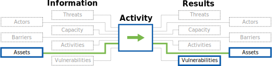

Developed with ❤ by

Information Innovation Lab
Applied research and development of public interest technology.
This component allows the auditor to identify the devices on a host's network, the services that are being used by those devices, and any protections in place.
Mapping an organization's network exposes the multitude of devices connected to it -- including mostly forgotten servers -- and provides the baseline for later work on device assessment and vulnerability research.
This process also reveals outside service usage (such as google services, dropbox, or others) which serve -- intentionally or not -- as shadow infrastructure for the organization. In combination with beacon research from the network discovery process, many devices can be associated with users.

Guide: "10 Techniques for Blindly Mapping Internal Networks"
Resource List: Wireless Access Guides & Resources (SAFETAG)
Resource List: nmap Scanning Resources (SAFETAG)
Resource List: System Vulnerability Scanning Resources (SAFETAG)
Guide: "10 Techniques for Blindly Mapping Internal Networks"
Directory: "Network Forensics Packages and Appliances" (Forensics Wiki)
Directory: "Scripts and tools related to Wireshark" (Wireshark Wiki)
Guide: "The Official Nmap Project Guide to Network Discovery and Security Scanning" (Gordon “Fyodor” Lyon)
Cheat Sheet: “Part 1: Introduction to Nmap” (Nmap Cheat Sheet: From Discovery to Exploits)
Cheat Sheet: “Part 2: Advance Port Scanning with Nmap And Custom Idle Scan” (Nmap Cheat Sheet: From Discovery to Exploits)
Cheat Sheet: “Part 3: Gathering Additional Information about Host and Network” (Nmap Cheat Sheet: From Discovery to Exploits)
Cheat Sheet: “Part 4” (Nmap Cheat Sheet: From Discovery to Exploits)
Cheat Sheet: “Nmap Cheat Sheet” (See-Security Technologies)
Overview: “The Purpose of a Graphical Frontend for Nmap” (Zenmap GUI Users' Guide)
Guide: “Zenmap GUI Users' Guide” (Zenmap GUI Users' Guide)
Guide: “Surfing the Network Topology” (Zenmap GUI Users' Guide)
Guide: “Host Detection” (nmap Reference Guide)
Applied research and development of public interest technology.